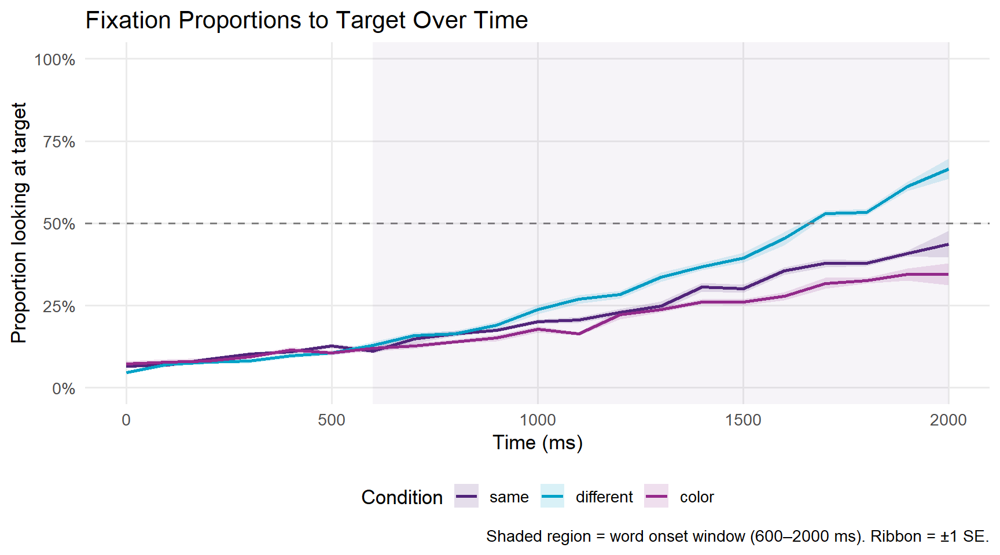
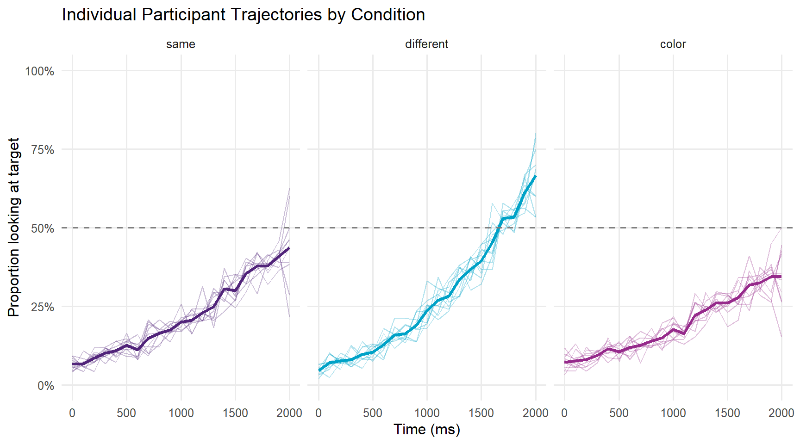
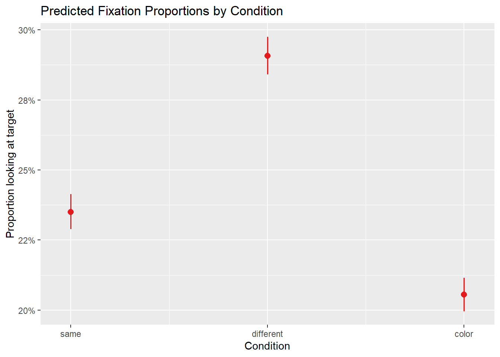
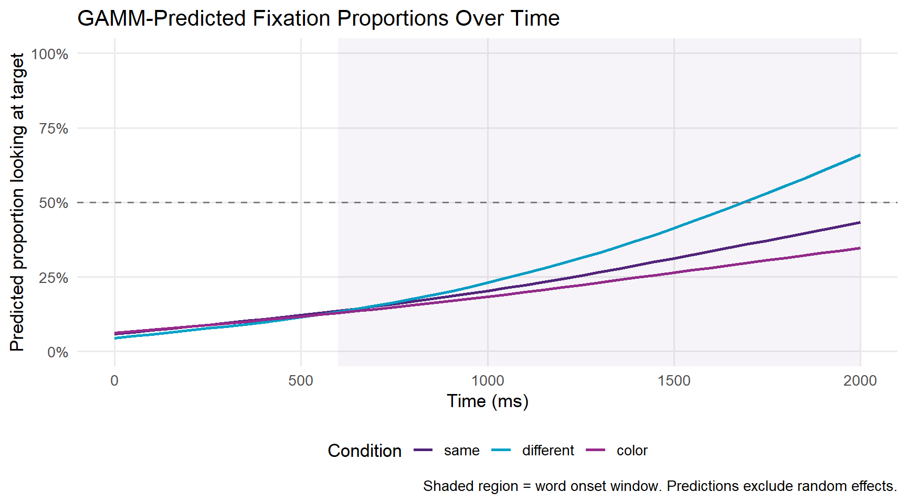
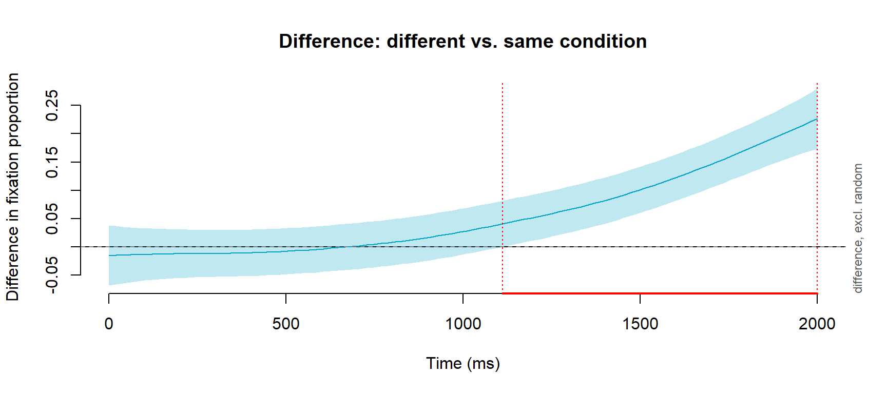
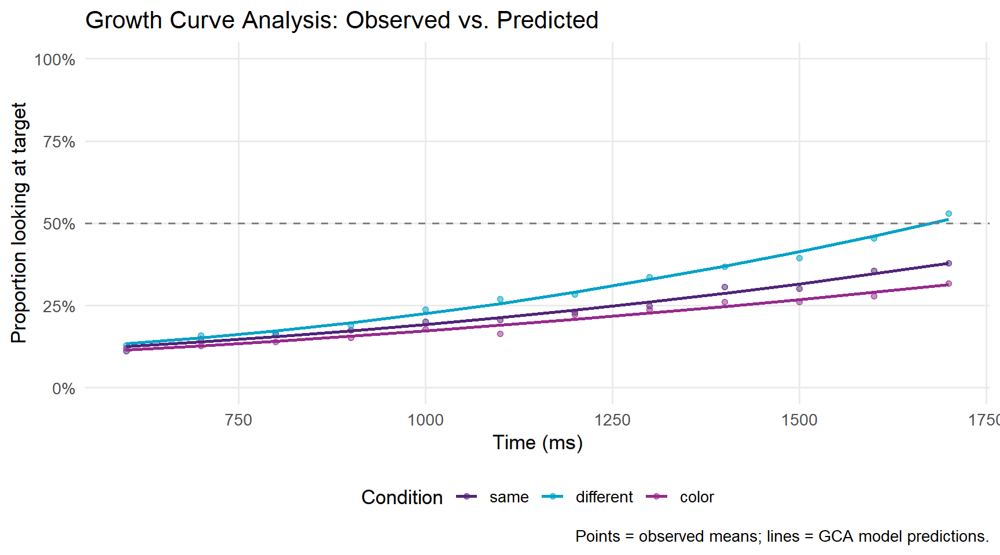

Code
install.packages(c(
"tidyverse",
"eyetrackingR",
"data.table",
"itsadug",
"lme4",
"mgcv",
"sjPlot",
"ggplot2",
"here"
))
Eye-tracking is one of the most powerful methods available to researchers studying real-time language processing. By recording where participants look — and when — as they hear or read linguistic input, eye-tracking provides millisecond-resolution evidence about how the mind constructs meaning, retrieves words, and resolves structural ambiguities. The technique rests on a simple but powerful insight: eye movements are tightly time-locked to ongoing cognitive processing (Tanenhaus et al. 1995; Allopenna, Magnuson, and Tanenhaus 1998). When a listener hears a spoken word, their eyes move to a picture of the named object within approximately 200 ms — faster than they can consciously plan a deliberate response. This tight coupling between language and gaze makes eye movements a privileged window into the real-time workings of the language system.
The Visual World Paradigm (VWP) in particular has become a cornerstone of psycholinguistic research. In the canonical version of the paradigm, introduced by Tanenhaus et al. (1995), participants listen to spoken sentences while viewing a display of objects or images, and the time course of their eye movements to those images reflects the unfolding of language comprehension in real time. Since that foundational study, the VWP has been used to investigate an extraordinary range of phenomena: spoken word recognition and lexical competition (Allopenna, Magnuson, and Tanenhaus 1998), the use of grammatical gender in word recognition (Dahan et al. 2000), syntactic ambiguity resolution, referential processing, predictive language use, and many more. The paradigm has proven especially valuable because it captures the time course of processing — not just whether listeners are successful, but when and how quickly they arrive at an interpretation.
Despite its power, eye-tracking data is notoriously complex to work with. Raw data files contain thousands of gaze samples per participant, spread across multiple trials, with coordinates that must be mapped onto regions of interest, cleaned for data quality, binned into analysis windows, and then subjected to appropriate statistical models. The processing chain from raw data to analysable dataset is long, and the choices made at each step — which data points to exclude, how wide to make time bins, which covariates to include — can meaningfully affect results. The statistical analysis of VWP data has itself been the subject of considerable methodological development, from simple ANOVA on time-window averages through mixed-effects logistic regression (Barr 2008), growth curve analysis (Mirman 2014), and Generalised Additive Mixed Models (Wieling 2018).
This tutorial walks through the complete workflow from raw eye-tracking data to statistical analysis in R. It uses a synthetic dataset modelled on a typical Visual World Paradigm experiment, so you can follow along and run all code without needing your own eye-tracking data. The data structure mirrors output from Gorilla (a popular online experiment platform), but the processing principles apply to data from any eye-tracking system, including SR Research EyeLink, Tobii, and SMI.
Before working through this tutorial, you should be comfortable with:
You do not need prior experience with eye-tracking data or psycholinguistics to follow this tutorial.
By the end of this tutorial you will be able to:
eyetrackingR package to create analysis-ready data objects and generate standard eye-tracking visualisationsMartin Schweinberger. 2026. Processing and Analysing Eye-Tracking Data in R. The Language Technology and Data Analysis Laboratory (LADAL), The University of Queensland, Australia. url: https://ladal.edu.au/tutorials/eyetracking/eyetracking.html (Version 2026.04.01), doi: 10.5281/zenodo.19350403.
What you will learn: The logic of the Visual World Paradigm; the structure of the data it generates; and the key analytical decisions researchers face when working with VWP data.
In a typical Visual World Paradigm experiment, a participant sits in front of a screen displaying two or more images (the “visual world”) while wearing an eye-tracker. They hear a spoken sentence that refers to one of the images — the target — while the other image(s) serve as competitors or distractors. The central measurement is the proportion of time the participant looks at the target image in each time window, which reflects how strongly the spoken input guides their attention.
The logic of the paradigm is elegant: if language comprehension is a purely internal process, we would expect gaze to be distributed randomly across images until the sentence is complete. But this is not what happens. Listeners move their eyes to the target image remarkably early — in some cases before the spoken word is even acoustically complete — demonstrating that language comprehension is continuous, incremental, and directly coupled to action and perception (Allopenna, Magnuson, and Tanenhaus 1998). This finding has had profound theoretical consequences, providing strong evidence against “encapsulated” parsing models and in favour of constraint-based, interactive accounts of language processing.
The paradigm is particularly powerful for studying a wide range of psycholinguistic phenomena:
The paradigm has also proved a valuable tool for studying special populations — including people with aphasia, hearing impairment, and developmental language disorders — since it places minimal demands on explicit responses and captures processing that participants may be unaware of.
Eye-tracking data from a VWP experiment typically has a hierarchical structure:
This hierarchical structure has important consequences for both data processing and statistical analysis. Observations within participants are not independent — a participant’s looking behaviour on trial 10 is influenced by their habits, attention, and fatigue, all of which also affect trial 11. Observations within trials are not independent either — consecutive gaze samples are highly correlated, since the eye cannot teleport between locations. The eyes move in ballistic trajectories called saccades, and between saccades the eye is relatively stationary in a fixation.
Two aspects of the structure call for particular care. First, the dependent variable — proportion of time looking at the target — is bounded between 0 and 1, which means that ordinary linear models are technically inappropriate; logistic or arcsine-transformed versions are preferable (Barr 2008). Second, the time course of looking is itself the primary signal of interest, and any analysis method that collapses across time (such as a simple t-test on mean proportions in an analysis window) discards the richest information the data contain. The most powerful modern analyses — mixed-effects logistic regression (Barr 2008), growth curve analysis (Mirman 2014), and GAMMs (Wieling 2018) — all retain or model the time dimension explicitly.
The synthetic dataset used here simulates a Visual World Paradigm experiment investigating the processing of grammatical gender in a two-alternative forced-choice task, inspired by classic studies such as Dahan et al. (2000). Participants hear a sentence containing a gender-marked article and see two images — one whose name matches the gender of the article (the target) and one that does not (the competitor). The core prediction is that grammatical gender information in the article should help listeners identify the target earlier in the different condition (where the article’s gender uniquely identifies the target) than in the same condition (where the article is compatible with both images).
The experiment includes three conditions:
The key empirical prediction is that fixation proportions in the different condition should diverge above chance earlier than in the same condition, with the size and onset of this divergence providing evidence about how quickly and completely gender information is used during real-time word recognition.
The dataset is modelled on the output format of Gorilla (an online experiment platform widely used for remote and in-person eye-tracking via webcam or remote tracker). It contains the columns you would encounter in a real Gorilla experiment, including participant IDs, trial identifiers, gaze coordinates, timestamp, AOI zone information, and accuracy. All values are simulated using realistic parameters — 30 participants, 24 trials each, 200 gaze samples per trial at 100 Hz equivalent sampling.
What you will learn: How to install and load the packages needed for eye-tracking analysis, and how to generate the synthetic dataset used throughout this tutorial.
install.packages(c(
"tidyverse",
"eyetrackingR",
"data.table",
"itsadug",
"lme4",
"mgcv",
"sjPlot",
"ggplot2",
"here"
))library(tidyverse)
library(eyetrackingR)
library(data.table)
library(itsadug)
library(lme4)
library(mgcv)
library(sjPlot)
library(ggplot2)
library(here)
# set global options
options(stringsAsFactors = FALSE)
options("scipen" = 100, "digits" = 4)The key packages and their roles:
| Package | Role |
|---|---|
tidyverse |
Data manipulation and visualisation (dplyr, ggplot2, tidyr, stringr) |
eyetrackingR |
Eye-tracking-specific data processing and visualisation |
data.table |
Fast combining of large data frames |
itsadug |
Time bin creation and GAMM utilities |
lme4 |
Mixed-effects logistic regression |
mgcv |
Generalised Additive Mixed Models (GAMMs) |
sjPlot |
Model output tables and plots |
The code below creates a synthetic dataset that mirrors the structure of real Gorilla eye-tracking output. In a real project you would load your own data files instead. Run this once to generate the data objects used throughout the tutorial.
set.seed(42)
# ── Experiment parameters ────────────────────────────────────
n_participants <- 30
n_trials <- 24
conditions <- c("same", "different", "color")
target_positions <- c("left", "right")
screen_width <- 1920
screen_height <- 1080
# Image dimensions (pixels)
img_width <- 400
img_height <- 400
# Image positions: left image centred at (480, 540), right at (1440, 540)
left_x <- 280; left_y <- 340
right_x <- 1240; right_y <- 340
# ── Master file: one row per trial per participant ────────────
mstr_redux <- expand.grid(
participant_id = factor(paste0("P", sprintf("%02d", 1:n_participants))),
trial = factor(1:n_trials)
) |>
dplyr::mutate(
condition = rep(conditions, length.out = n()),
target_gender = sample(c("masculine", "feminine"), n(), replace = TRUE),
target_position = sample(target_positions, n(), replace = TRUE),
target_item = paste0("item_", trial),
Correct = sample(c("Correct", "Incorrect"), n(),
replace = TRUE, prob = c(0.85, 0.15))
)
# ── Image boundary data: one row per participant × trial ──────
# Note: target_position is NOT included here — it comes from mstr_redux.
# Including it in ibs would create duplicate columns (.x / .y) after joining.
ibs <- mstr_redux |>
dplyr::select(participant_id, trial) |>
dplyr::mutate(
left_topedge = left_y,
left_bottomedge = left_y + img_height,
left_leftedge = left_x,
left_rightedge = left_x + img_width,
right_topedge = right_y,
right_bottomedge= right_y + img_height,
right_leftedge = right_x,
right_rightedge = right_x + img_width
)
# ── Gaze samples: ~200 samples per trial per participant ──────
n_samples <- 200 # samples per trial
time_points <- seq(0, 2000, length.out = n_samples) # 0–2000 ms
# Generate gaze data with realistic looking behaviour:
# participants look more at the target as time progresses
gaze_rows <- lapply(1:n_participants, function(p) {
pid <- paste0("P", sprintf("%02d", p))
lapply(1:n_trials, function(t) {
trial_info <- mstr_redux |>
dplyr::filter(participant_id == pid, trial == t)
tpos <- trial_info$target_position
cond <- trial_info$condition
# Bias toward target increases after ~600ms (word onset)
# and is stronger in "different" condition
bias_strength <- dplyr::case_when(
cond == "different" ~ 0.7,
cond == "same" ~ 0.5,
TRUE ~ 0.4
)
look_prob <- plogis(-2 + bias_strength * (time_points - 600) / 400)
looks_at_target <- rbinom(n_samples, 1, look_prob)
# Convert looking to x/y coordinates
x_pred <- ifelse(looks_at_target == 1,
# looking at target
ifelse(tpos == "left",
runif(n_samples, left_x + 20, left_x + img_width - 20),
runif(n_samples, right_x + 20, right_x + img_width - 20)),
# looking at competitor or elsewhere
ifelse(tpos == "left",
runif(n_samples, right_x + 20, right_x + img_width - 20),
runif(n_samples, left_x + 20, left_x + img_width - 20))
)
y_pred <- runif(n_samples, 360, 740)
data.frame(
participant_id = pid,
trial = t,
time_elapsed = time_points,
x_pred = x_pred,
y_pred = y_pred,
face_conf = runif(n_samples, 0.3, 1.0)
)
}) |> dplyr::bind_rows()
}) |> dplyr::bind_rows() |>
dplyr::mutate(
participant_id = factor(participant_id),
trial = factor(trial)
)
cat("Synthetic dataset created:\n")Synthetic dataset created:cat(" Participants:", n_participants, "\n") Participants: 30 cat(" Trials per participant:", n_trials, "\n") Trials per participant: 24 cat(" Gaze samples:", nrow(gaze_rows), "\n") Gaze samples: 144000 What you will learn: How to join gaze data with image boundaries and trial metadata; how to code AOI membership; how to bin time; and how to clean the dataset for analysis.
The first step is to combine the raw gaze data with the image boundary information. This gives us the coordinate ranges for each AOI on each trial, which we need to determine whether each gaze sample falls inside or outside the target image.
# Join gaze data with image boundary information
edatibs <- dplyr::left_join(
gaze_rows, ibs,
by = c("participant_id", "trial")
)
# Apply face/gaze confidence threshold
# Samples with confidence below 0.5 are too noisy to be reliable
edatibs <- edatibs |>
dplyr::filter(face_conf >= 0.5)
cat("Rows after confidence filter:", nrow(edatibs), "\n")Rows after confidence filter: 102933 The face_conf column (in Gorilla data) or equivalent confidence/validity column (in EyeLink, Tobii etc.) reflects how reliably the eye-tracker detected the participant’s gaze. A threshold of 0.5 is common but should be adjusted based on your equipment and population. For child participants or participants with glasses, you may need a lower threshold — but inspect the distribution of confidence values in your data before deciding.
Now we join the gaze-plus-boundaries data with the master file containing trial-level information: condition, target gender, target position, and accuracy. This step is analogous to joining an experimental log file with raw tracker output — a common operation in VWP data pipelines. The master file typically contains one row per trial per participant and captures the experimental design: what stimulus was shown, what the correct response was, and which image was the target. Without this information it is impossible to determine which AOI corresponds to the target on any given trial, since the target position (left or right) typically varies across trials to prevent response biases.
# First join with metadata so target_position is available
dat <- dplyr::left_join(
edatibs, mstr_redux,
by = c("participant_id", "trial")
)
cat("Rows after joining with metadata:", nrow(dat), "\n")Rows after joining with metadata: 102933 cat("Columns:", ncol(dat), "\n")Columns: 19 The core step in VWP processing is determining whether each gaze sample falls within the target image — the Area of Interest (AOI). We create a binary variable: 1 if the participant is looking at the target, 0 otherwise.
AOI coding is the step where the spatial properties of the display are connected to the theoretical constructs of the analysis. A gaze sample that falls within the target AOI is interpreted as evidence that the participant’s attention is directed at the target — i.e., that the spoken input has successfully guided their looking behaviour. A gaze sample outside the target AOI may mean the participant is looking at the competitor, at some other part of the screen, or that they are mid-saccade between locations.
The boundaries of each AOI are defined as rectangles in screen pixel coordinates. In the present dataset, each image occupies a 400 × 400 pixel region, with the left image centred at approximately (480, 540) and the right image at approximately (1440, 540) on a 1920 × 1080 screen. In a real experiment, these coordinates come from your experiment software (Gorilla, PsychoPy, E-Prime, etc.) and must be carefully extracted and verified before running this step. An error in AOI boundaries — even a few pixels — can silently misclassify thousands of gaze samples.
# Now code AOI — target_position is available after the join above
dat <- dat %>%
dplyr::mutate(AOI = dplyr::case_when(
# Target is the LEFT image
target_position == "left" &
x_pred > left_leftedge & x_pred < left_rightedge &
y_pred > left_topedge & y_pred < left_bottomedge ~ 1,
# Target is the RIGHT image
target_position == "right" &
x_pred > right_leftedge & x_pred < right_rightedge &
y_pred > right_topedge & y_pred < right_bottomedge ~ 1,
# Otherwise not looking at target
TRUE ~ 0
))
# Quick check: what proportion of samples are in the AOI?
cat("Overall proportion looking at target AOI:",
round(mean(dat$AOI), 3), "\n")Overall proportion looking at target AOI: 0.216 There are two general approaches to AOI coding in R:
Manual approach (used above): Define AOI boundaries as coordinate ranges and use logical comparisons. This gives full control and is transparent, but requires you to know the exact pixel coordinates of each image.
eyetrackingR approach: The eyetrackingR package provides functions that work with pre-defined AOI columns. We will use this approach in the analysis section below, where eyetrackingR expects a column per AOI containing TRUE/FALSE values.
Both approaches give identical results — the choice depends on your data format.
The eyetrackingR package expects one logical column per AOI rather than a single numeric AOI column. We create AOI_target and AOI_competitor columns.
dat <- dat |>
dplyr::mutate(
# Is the participant looking at the target image?
AOI_target = dplyr::case_when(
target_position == "left" &
x_pred > left_leftedge & x_pred < left_rightedge &
y_pred > left_topedge & y_pred < left_bottomedge ~ TRUE,
target_position == "right" &
x_pred > right_leftedge & x_pred < right_rightedge &
y_pred > right_topedge & y_pred < right_bottomedge ~ TRUE,
TRUE ~ FALSE
),
# Is the participant looking at the competitor image?
AOI_competitor = dplyr::case_when(
target_position == "left" &
x_pred > right_leftedge & x_pred < right_rightedge &
y_pred > right_topedge & y_pred < right_bottomedge ~ TRUE,
target_position == "right" &
x_pred > left_leftedge & x_pred < left_rightedge &
y_pred > left_topedge & y_pred < left_bottomedge ~ TRUE,
TRUE ~ FALSE
)
)Eye-tracking data is sampled at high frequency (typically 60–1000 Hz), producing a gaze coordinate at every sample. For most analyses it is neither necessary nor desirable to work at this raw resolution: adjacent samples are highly correlated, bins of 1–17 ms contain too few observations to compute stable proportions, and the additional temporal resolution rarely adds interpretive value for VWP questions. Instead, we aggregate samples into time bins — windows of fixed duration within which we calculate the proportion of time looking at the target.
The choice of bin size involves a trade-off. Wider bins reduce noise but sacrifice temporal resolution, meaning that a rapid divergence between conditions that occurs over 50 ms might be smeared across a larger window and appear less sharp. Narrower bins preserve temporal detail but increase variance in each bin, especially at the extremes of the time course where looks are rare. A 100 ms bin is the most common choice in published VWP research and is what we use here. Note that the choice of bin size should ideally be made before data analysis and reported explicitly in your methods section, as it can affect the apparent timing of condition effects.
dat <- dat |>
dplyr::arrange(participant_id, trial, time_elapsed) |>
dplyr::mutate(
TimeBin = floor(time_elapsed / 100) * 100
)
cat("Number of unique time bins:", length(unique(dat$TimeBin)), "\n")Number of unique time bins: 21 cat("Time bin range:", min(dat$TimeBin), "to", max(dat$TimeBin), "ms\n")Time bin range: 0 to 2000 msThe right bin size depends on your sampling rate and research question:
Avoid bins that are too narrow relative to your sampling rate — if you sample at 60 Hz (one sample per ~17 ms), a 20 ms bin will often contain only one sample, making proportions meaningless.
Real datasets often contain spelling errors in condition labels or other categorical variables — a common problem when conditions are entered manually in experiment software. We standardise them here.
dat <- dat |>
dplyr::mutate(
condition = dplyr::case_when(
condition == "color" ~ "color",
condition == "same" ~ "same",
condition == "different" ~ "different",
condition == "differernt" ~ "different", # common typo
TRUE ~ condition
)
) |>
dplyr::mutate(condition = factor(condition,
levels = c("same", "different", "color")))Standard practice in VWP research is to exclude trials on which the participant gave an incorrect response, since eye movements on incorrect trials reflect a different cognitive state. We also exclude trials where the participant did not respond.
n_before <- nrow(dat)
dat <- dat |>
dplyr::filter(Correct == "Correct")
n_after <- nrow(dat)
cat("Rows removed (incorrect trials):", n_before - n_after, "\n")Rows removed (incorrect trials): 15128 cat("Rows remaining:", n_after, "\n")Rows remaining: 87805 cat("Proportion retained:", round(n_after / n_before, 3), "\n")Proportion retained: 0.853 The decision to exclude incorrect trials is standard but not universal. Some researchers retain all trials and include accuracy as a covariate. Others use different exclusion criteria — for example removing trials where the participant did not look at either AOI for a minimum duration, or removing participants whose overall accuracy is below a threshold (e.g. 70%). Document your exclusion criteria clearly in your methods section and report how many trials and participants were excluded.
# Check dimensions
cat("Final dataset dimensions:", nrow(dat), "rows ×", ncol(dat), "columns\n\n")Final dataset dimensions: 87805 rows × 23 columns# Check key variables
cat("Participants:", nlevels(dat$participant_id), "\n")Participants: 30 cat("Trials:", nlevels(dat$trial), "\n")Trials: 24 cat("Conditions:", paste(levels(dat$condition), collapse = ", "), "\n")Conditions: same, different, color cat("Time range:", min(dat$time_elapsed), "to", max(dat$time_elapsed), "ms\n")Time range: 0 to 2000 ms# Preview
dat |>
dplyr::select(participant_id, trial, time_elapsed, TimeBin,
x_pred, y_pred, AOI_target, condition, Correct) |>
head(8) participant_id trial time_elapsed TimeBin x_pred y_pred AOI_target condition
1 P01 1 0.00 0 485.9 692.5 FALSE same
2 P01 1 10.05 0 1529.7 557.1 TRUE same
3 P01 1 40.20 0 485.9 529.5 FALSE same
4 P01 1 50.25 0 485.9 442.5 FALSE same
5 P01 1 80.40 0 485.9 679.0 FALSE same
6 P01 1 90.45 0 485.9 725.2 FALSE same
7 P01 1 100.50 100 485.9 451.9 FALSE same
8 P01 1 110.55 100 485.9 664.4 FALSE same
Correct
1 Correct
2 Correct
3 Correct
4 Correct
5 Correct
6 Correct
7 Correct
8 Correct# Save processed data for later use
write.table(dat, here::here("data", "dat_processed.txt"),
sep = "\t", row.names = FALSE)# Reload from disk
dat <- read.delim(here::here("data", "dat_processed.txt"), sep = "\t") |>
dplyr::mutate(
participant_id = factor(participant_id),
trial = factor(trial),
condition = factor(condition, levels = c("same", "different", "color"))
)What you will learn: How to create an eyetrackingR data object from the processed data frame, and why this step is important for downstream analyses.
The eyetrackingR package requires data to be in a specific format, validated by the make_eyetrackingr_data() function. This function checks that your data has the right structure, warns about potential problems, and tags the data object with the metadata eyetrackingR needs for its analysis functions.
# Add explicit trackloss column (FALSE = valid sample, TRUE = lost track)
# We already filtered low-confidence samples, so all remaining rows are valid
dat <- dat |>
dplyr::mutate(trackloss = FALSE)
dat_etr <- eyetrackingR::make_eyetrackingr_data(
dat,
participant_column = "participant_id",
trial_column = "trial",
time_column = "time_elapsed",
trackloss_column = "trackloss",
aoi_columns = c("AOI_target", "AOI_competitor"),
treat_non_aoi_looks_as_missing = FALSE
)
cat("eyetrackingR data object created successfully.\n")eyetrackingR data object created successfully.cat("Class:", class(dat_etr), "\n")Class: eyetrackingR_data eyetrackingR_df tbl_df tbl data.frame The function validates that:
If any checks fail, eyetrackingR will print informative warnings. Address these before proceeding — they often reveal data quality issues that would silently distort analyses.
What you will learn: How to visualise the time course of fixation proportions across conditions using eyetrackingR and ggplot2, and how to interpret these plots.
The standard VWP visualisation shows the proportion of trials on which participants are looking at the target as a function of time. We first aggregate over participants within each condition and time bin.
# Create response window data aggregated by time bin
response_window <- eyetrackingR::make_time_sequence_data(
dat_etr,
time_bin_size = 100,
predictor_columns = c("condition"),
aois = "AOI_target",
summarize_by = "participant_id"
)
head(response_window) participant_id condition TimeBin SamplesInAOI SamplesTotal AOI Elog
1 P01 same 0 13 143 AOI_target -2.269
2 P01 same 1 9 160 AOI_target -2.769
3 P01 same 2 12 165 AOI_target -2.508
4 P01 same 3 17 156 AOI_target -2.076
5 P01 same 4 19 155 AOI_target -1.946
6 P01 same 5 21 150 AOI_target -1.796
Weights Prop LogitAdjusted ArcSin Time ot1 ot2 ot3 ot4
1 12.234 0.09091 -2.303 0.3063 0 -0.3604 0.422855 -0.43330 0.4051
2 8.939 0.05625 -2.820 0.2395 100 -0.3243 0.295999 -0.17332 0.0000
3 11.559 0.07273 -2.546 0.2731 200 -0.2883 0.182495 0.01824 -0.2132
4 15.549 0.10897 -2.101 0.3364 300 -0.2523 0.082346 0.14899 -0.2843
5 17.062 0.12258 -1.968 0.3577 400 -0.2162 -0.004451 0.22653 -0.2571
6 18.439 0.14000 -1.815 0.3835 500 -0.1802 -0.077894 0.25846 -0.1698
ot5 ot6 ot7
1 -0.35137 0.28471 -0.2163
2 0.17568 -0.31318 0.3893
3 0.31438 -0.28171 0.1343
4 0.23733 -0.04046 -0.1844
5 0.07143 0.17611 -0.2856
6 -0.09636 0.26774 -0.1717# Summarise across participants for plotting
plot_dat <- response_window |>
dplyr::group_by(condition, Time) |>
dplyr::summarise(
mean_prop = mean(Prop, na.rm = TRUE),
se_prop = sd(Prop, na.rm = TRUE) / sqrt(n()),
.groups = "drop"
)
ggplot(plot_dat, aes(x = Time, y = mean_prop,
colour = condition, fill = condition)) +
geom_ribbon(aes(ymin = mean_prop - se_prop,
ymax = mean_prop + se_prop), alpha = 0.15, colour = NA) +
geom_line(linewidth = 0.9) +
geom_hline(yintercept = 0.5, linetype = "dashed", colour = "grey50") +
annotate("rect", xmin = 600, xmax = 2000,
ymin = -Inf, ymax = Inf, alpha = 0.05, fill = "#51247A") +
scale_colour_manual(values = c("same" = "#51247A",
"different" = "#00A2C7",
"color" = "#962A8B")) +
scale_fill_manual(values = c("same" = "#51247A",
"different" = "#00A2C7",
"color" = "#962A8B")) +
scale_y_continuous(limits = c(0, 1),
labels = scales::percent_format()) +
labs(
title = "Fixation Proportions to Target Over Time",
x = "Time (ms)",
y = "Proportion looking at target",
colour = "Condition",
fill = "Condition",
caption = "Shaded region = word onset window (600–2000 ms). Ribbon = ±1 SE."
) +
theme_minimal(base_size = 13) +
theme(
legend.position = "bottom",
panel.grid.minor = element_blank()
)
A proportion of 0.5 (the dashed line) represents chance — the participant is equally likely to be looking at the target or the competitor. Values above 0.5 indicate a target preference; values below 0.5 indicate a competitor preference.
In a typical VWP gender agreement experiment, we expect: - All conditions to start near chance (participants don’t know which image is the target yet) - The different condition to diverge earliest and most strongly above chance, because the gender mismatch on the article immediately signals which image is the target - The same condition to show a weaker or delayed target preference, because the article is compatible with both images
A spaghetti plot shows individual participant trajectories, which helps identify outliers and assess variability.
# Aggregate by participant and time for spaghetti plot
spaghetti_dat <- response_window |>
dplyr::group_by(participant_id, condition, Time) |>
dplyr::summarise(mean_prop = mean(Prop, na.rm = TRUE), .groups = "drop")
ggplot(spaghetti_dat, aes(x = Time, y = mean_prop,
group = participant_id, colour = condition)) +
geom_line(alpha = 0.3, linewidth = 0.4) +
stat_summary(aes(group = condition), fun = mean,
geom = "line", linewidth = 1.2) +
geom_hline(yintercept = 0.5, linetype = "dashed", colour = "grey50") +
facet_wrap(~condition) +
scale_colour_manual(values = c("same" = "#51247A",
"different" = "#00A2C7",
"color" = "#962A8B")) +
scale_y_continuous(limits = c(0, 1),
labels = scales::percent_format()) +
labs(title = "Individual Participant Trajectories by Condition",
x = "Time (ms)",
y = "Proportion looking at target",
colour = "Condition") +
theme_minimal(base_size = 12) +
theme(legend.position = "none",
panel.grid.minor = element_blank())
What you will learn: How to analyse eye-tracking data using two complementary approaches — mixed-effects logistic regression on time-window aggregates, and Generalised Additive Mixed Models (GAMMs) for the full time course.
The most common approach to VWP analysis is to define a critical time window — typically starting at word onset and ending when the acoustic signal is complete — and aggregate fixation proportions within that window. The binary outcome (looking/not looking at target on each sample) is then modelled with logistic regression, with random effects for participants and items (Barr 2008).
This approach has both strengths and limitations. Its main strength is simplicity: a single model with interpretable coefficients answers the core question of whether conditions differ in the analysis window. Its main limitation is that the window must be chosen in advance, and different window choices can yield different conclusions. Choosing a window after inspecting the data inflates Type I error rates. The window approach also discards the time course entirely — if the different and same conditions converge at the beginning and end of the window but diverge in the middle, a window average would show no effect even though there is one. For this reason, window analysis is best used as a confirmatory test after time course visualisation has established where to look.
The critical window of 600–1800 ms used here corresponds to the period from approximate word onset to the end of the analysis epoch. This is a reasonable default for a gender agreement experiment, but the appropriate window will depend on your specific stimuli and research question.
# Define critical window (for reference — make_time_window_data aggregates
# across all time by default; filter dat_etr to the window first if needed)
window_start <- 600
window_end <- 1800
# Filter the eyetrackingR data object to the critical window before aggregating
dat_etr_window <- dat_etr |>
dplyr::filter(time_elapsed >= window_start, time_elapsed <= window_end)
# Now create window data from the filtered object
response_window_agg <- eyetrackingR::make_time_window_data(
dat_etr_window,
aois = "AOI_target",
predictor_columns = c("condition"),
summarize_by = "participant_id"
)
head(response_window_agg) participant_id condition SamplesInAOI SamplesTotal AOI Elog Weights
1 P01 same 429 1912 AOI_target -1.2395 333.1
2 P02 different 465 1533 AOI_target -0.8309 324.2
3 P03 color 383 1831 AOI_target -1.3289 303.2
4 P04 same 391 1647 AOI_target -1.1661 298.5
5 P05 different 566 1996 AOI_target -0.9263 405.8
6 P06 color 391 1885 AOI_target -1.3396 310.2
Prop LogitAdjusted ArcSin
1 0.2244 -1.2404 0.4935
2 0.3033 -0.8315 0.5833
3 0.2092 -1.3299 0.4750
4 0.2374 -1.1670 0.5089
5 0.2836 -0.9268 0.5616
6 0.2074 -1.3405 0.4729We model the proportion of looks to the target in the critical window as a function of condition, with random intercepts for participants and items.
# Convert proportion to counts for logistic regression
# eyetrackingR provides SamplesInAOI and SamplesTotal
response_window_agg <- response_window_agg |>
dplyr::mutate(
# Re-code condition with "same" as reference level
condition = relevel(factor(condition), ref = "same")
)
# Fit mixed-effects logistic regression
m_logistic <- lme4::glmer(
cbind(SamplesInAOI, SamplesTotal - SamplesInAOI) ~
condition +
(1 | participant_id),
data = response_window_agg,
family = binomial,
control = glmerControl(optimizer = "bobyqa",
optCtrl = list(maxfun = 2e5))
)
summary(m_logistic)Generalized linear mixed model fit by maximum likelihood (Laplace
Approximation) [glmerMod]
Family: binomial ( logit )
Formula: cbind(SamplesInAOI, SamplesTotal - SamplesInAOI) ~ condition +
(1 | participant_id)
Data: response_window_agg
Control: glmerControl(optimizer = "bobyqa", optCtrl = list(maxfun = 200000))
AIC BIC logLik deviance df.resid
261.8 267.4 -126.9 253.8 26
Scaled residuals:
Min 1Q Median 3Q Max
-2.770 -0.357 0.215 0.521 2.092
Random effects:
Groups Name Variance Std.Dev.
participant_id (Intercept) 0 0
Number of obs: 30, groups: participant_id, 30
Fixed effects:
Estimate Std. Error z value Pr(>|z|)
(Intercept) -1.1800 0.0178 -66.3 < 0.0000000000000002 ***
conditiondifferent 0.2883 0.0244 11.8 < 0.0000000000000002 ***
conditioncolor -0.1722 0.0257 -6.7 0.000000000021 ***
---
Signif. codes: 0 '***' 0.001 '**' 0.01 '*' 0.05 '.' 0.1 ' ' 1
Correlation of Fixed Effects:
(Intr) cndtnd
cndtndffrnt -0.729
conditinclr -0.692 0.504
optimizer (bobyqa) convergence code: 0 (OK)
boundary (singular) fit: see help('isSingular')sjPlot::plot_model(
m_logistic,
type = "eff",
terms = "condition",
title = "Predicted Fixation Proportions by Condition",
axis.title = c("Condition", "Proportion looking at target")
)
The fixed effect of condition tells us whether fixation proportions differ significantly between conditions. A positive coefficient for conditiondifferent means participants look more at the target in the different condition than in the same condition (the reference level), as we would expect if grammatical gender guides attention.
The random intercept for participant_id captures individual differences in overall target preference — some participants may be more systematic lookers than others.
Mixed-effects logistic regression answers the question “do conditions differ in the analysis window?” but discards the time course entirely. Generalised Additive Mixed Models (GAMMs) offer a more powerful alternative: they model the entire trajectory of fixation proportions as a smooth function of time, allowing us to ask not just whether conditions differ, but when the difference emerges, how large it grows, and when it disappears (Wieling 2018).
GAMMs are an extension of the generalised linear model in which the relationship between a predictor and the response is represented by a smooth function (a spline) rather than a straight line. The degree of smoothness is estimated from the data rather than specified by the analyst — making GAMMs far more flexible than the polynomial terms used in growth curve analysis. This flexibility is particularly valuable for VWP data, where the time course of fixation proportions rises non-linearly from chance, plateaus, and sometimes declines again, making any fixed-order polynomial a potentially poor approximation.
The time course of fixation proportions is non-linear — it rises, plateaus, and sometimes falls back to chance — and observations at adjacent time points are highly correlated. Standard regression models assume linear effects and independent errors, both of which are violated. GAMMs handle non-linearity via smooth terms and autocorrelation via AR(1) error structures.
For a comprehensive introduction to GAMMs in linguistics, see Baayen et al. (2018) and the GAMM tutorial by Wieling (2018).
GAMMs require the data in sample-level format (not aggregated), with autocorrelation handled appropriately.
# Aggregate to participant × condition × time bin level
gamm_dat <- dat |>
dplyr::filter(time_elapsed >= 0, time_elapsed <= 2000) |>
dplyr::group_by(participant_id, condition, TimeBin) |>
dplyr::summarise(
prop_target = mean(AOI_target, na.rm = TRUE),
n_samples = n(),
.groups = "drop"
) |>
dplyr::mutate(
# Numeric participant ID for mgcv
pid_num = as.integer(participant_id),
condition = relevel(factor(condition), ref = "same"),
# Start event marker for AR1 autocorrelation
start_event = !duplicated(paste(participant_id, condition))
) |>
dplyr::arrange(participant_id, condition, TimeBin)# Fit GAMM with condition × time smooth interaction
# and random smooths for participants
m_gamm <- mgcv::bam(
prop_target ~
# Smooth of time for each condition (different smooths per condition)
condition +
s(TimeBin, by = condition, k = 10) +
# Random intercept for participant
s(participant_id, bs = "re"),
data = gamm_dat,
method = "fREML",
# AR1 autocorrelation to handle temporal dependency
AR.start = gamm_dat$start_event,
rho = 0.7 # autocorrelation parameter (estimate from data in practice)
)
summary(m_gamm)
Family: gaussian
Link function: identity
Formula:
prop_target ~ condition + s(TimeBin, by = condition, k = 10) +
s(participant_id, bs = "re")
Parametric coefficients:
Estimate Std. Error t value Pr(>|t|)
(Intercept) 0.22052 0.00978 22.56 < 0.0000000000000002 ***
conditiondifferent 0.05656 0.01386 4.08 0.000051 ***
conditioncolor -0.02832 0.01379 -2.05 0.04 *
---
Signif. codes: 0 '***' 0.001 '**' 0.01 '*' 0.05 '.' 0.1 ' ' 1
Approximate significance of smooth terms:
edf Ref.df F p-value
s(TimeBin):conditionsame 2.4508669 3.17 67.6 <0.0000000000000002 ***
s(TimeBin):conditiondifferent 3.8024045 4.92 120.1 <0.0000000000000002 ***
s(TimeBin):conditioncolor 1.9365145 2.49 50.0 <0.0000000000000002 ***
s(participant_id) 0.0000182 27.00 0.0 1
---
Signif. codes: 0 '***' 0.001 '**' 0.01 '*' 0.05 '.' 0.1 ' ' 1
R-sq.(adj) = 0.928 Deviance explained = 92.9%
fREML = -1011.3 Scale est. = 0.0041507 n = 630The rho parameter above is set to 0.7 for illustration. In practice, you should estimate it from the data using itsadug::start_value_rho() on a model fitted without AR1 correction first:
# Step 1: fit without AR1
m_gamm_noar <- mgcv::bam(prop_target ~ condition + s(TimeBin, by = condition, k = 10) +
s(participant_id, bs = "re"), data = gamm_dat, method = "fREML")
# Step 2: estimate rho
rho_estimate <- itsadug::start_value_rho(m_gamm_noar)
# Step 3: refit with AR1
m_gamm <- mgcv::bam(..., rho = rho_estimate, AR.start = gamm_dat$start_event)# Create prediction grid
pred_grid <- expand.grid(
TimeBin = seq(0, 2000, by = 50),
condition = levels(gamm_dat$condition),
participant_id = levels(gamm_dat$participant_id)[1] # reference participant
)
pred_grid$fit <- predict(m_gamm, newdata = pred_grid,
exclude = "s(participant_id)", se.fit = FALSE)
ggplot(pred_grid, aes(x = TimeBin, y = fit,
colour = condition, fill = condition)) +
geom_line(linewidth = 1) +
geom_hline(yintercept = 0.5, linetype = "dashed", colour = "grey50") +
annotate("rect", xmin = 600, xmax = 2000,
ymin = -Inf, ymax = Inf, alpha = 0.05, fill = "#51247A") +
scale_colour_manual(values = c("same" = "#51247A",
"different" = "#00A2C7",
"color" = "#962A8B")) +
scale_fill_manual(values = c("same" = "#51247A",
"different" = "#00A2C7",
"color" = "#962A8B")) +
scale_y_continuous(limits = c(0, 1),
labels = scales::percent_format()) +
labs(title = "GAMM-Predicted Fixation Proportions Over Time",
x = "Time (ms)",
y = "Predicted proportion looking at target",
colour = "Condition",
fill = "Condition",
caption = "Shaded region = word onset window. Predictions exclude random effects.") +
theme_minimal(base_size = 13) +
theme(legend.position = "bottom",
panel.grid.minor = element_blank())
A key advantage of GAMMs is that we can test whether the smooth for one condition differs significantly from another using difference smooths.
# Use itsadug to plot the difference smooth between conditions
# This shows WHERE in time the conditions are significantly different
itsadug::plot_diff(
m_gamm,
view = "TimeBin",
comp = list(condition = c("different", "same")),
main = "Difference: different vs. same condition",
ylab = "Difference in fixation proportion",
xlab = "Time (ms)",
col = "#00A2C7",
shade = TRUE
)Summary:
* TimeBin : numeric predictor; with 100 values ranging from 0.000000 to 2000.000000.
* participant_id : factor; set to the value(s): P01. (Might be canceled as random effect, check below.)
* NOTE : The following random effects columns are canceled: s(participant_id)
TimeBin window(s) of significant difference(s):
1111.111111 - 2000.000000abline(h = 0, lty = 2, col = "grey50")
The difference smooth shows the estimated difference between the different and same conditions at each time point. When the shaded confidence interval does not include zero, the conditions are significantly different at that point in time. This allows you to make precise, data-driven statements about when a condition effect emerges — for example “conditions diverged significantly from 750 ms onwards.”
What you will learn: How to perform Growth Curve Analysis (GCA), a mixed-effects polynomial regression approach to VWP time course data that is widely used in the psycholinguistics literature.
Growth Curve Analysis (GCA) (Mirman 2014) was developed specifically for the analysis of VWP time course data. The approach uses orthogonal polynomial time terms — a linear term capturing the overall rise in target fixations, a quadratic term capturing the curvature of that rise, and sometimes higher-order terms — within a standard mixed-effects regression framework (Mirman, Dixon, and Magnuson 2008). The key advantage of GCA over time-window analysis is that it retains and models the time course rather than collapsing it, while remaining within the familiar mixed-effects regression framework that most psycholinguists already know.
GCA is particularly well suited to capturing the characteristic S-shaped trajectory of VWP data: fixation proportions start near chance, rise steeply as the acoustic signal disambiguates, and then plateau at a high level. The linear term captures the overall direction of change, and the quadratic term captures whether the rise is accelerating (convex) or decelerating (concave). Experimental effects are reflected in interactions between these polynomial time terms and the condition predictor — for example, a significant ot1:condition interaction indicates that one condition shows a steeper overall rise than another, while a significant ot2:condition interaction indicates that the shape of the rise differs between conditions.
GCA is a useful complement to GAMMs when you want interpretable, directly comparable coefficients (for reporting in tables or comparing across studies) rather than flexible smooths.
# Create orthogonal polynomial time terms
# Using the analysis window 600–1800 ms
gca_dat <- dat |>
dplyr::filter(time_elapsed >= 600, time_elapsed <= 1800) |>
dplyr::group_by(participant_id, condition, TimeBin) |>
dplyr::summarise(
prop_target = mean(AOI_target, na.rm = TRUE),
.groups = "drop"
) |>
dplyr::mutate(
condition = relevel(factor(condition), ref = "same")
)
# Create orthogonal polynomial time terms (linear + quadratic)
t <- poly(unique(gca_dat$TimeBin), 2)
gca_dat[, c("ot1", "ot2")] <- t[match(gca_dat$TimeBin,
unique(gca_dat$TimeBin)), 1:2]# Fit growth curve model
m_gca <- lme4::lmer(
prop_target ~
# Fixed effects: condition × time interactions
(ot1 + ot2) * condition +
# Random effects: participant-level time course variation
(ot1 + ot2 | participant_id),
data = gca_dat,
REML = FALSE,
control = lmerControl(optimizer = "bobyqa")
)
summary(m_gca)Linear mixed model fit by maximum likelihood ['lmerMod']
Formula: prop_target ~ (ot1 + ot2) * condition + (ot1 + ot2 | participant_id)
Data: gca_dat
Control: lmerControl(optimizer = "bobyqa")
AIC BIC logLik deviance df.resid
-1348.5 -1286.3 690.2 -1380.5 344
Scaled residuals:
Min 1Q Median 3Q Max
-2.686 -0.716 -0.019 0.666 3.277
Random effects:
Groups Name Variance Std.Dev. Corr
participant_id (Intercept) 0.00000886 0.00298
ot1 0.00002182 0.00467 0.49
ot2 0.00010590 0.01029 -0.81 0.12
Residual 0.00124676 0.03531
Number of obs: 360, groups: participant_id, 30
Fixed effects:
Estimate Std. Error t value
(Intercept) 0.23523 0.00336 70.05
ot1 0.27452 0.01126 24.37
ot2 0.03239 0.01163 2.79
conditiondifferent 0.05732 0.00475 12.07
conditioncolor -0.03057 0.00475 -6.44
ot1:conditiondifferent 0.13810 0.01593 8.67
ot1:conditioncolor -0.05828 0.01593 -3.66
ot2:conditiondifferent 0.02817 0.01645 1.71
ot2:conditioncolor -0.01418 0.01645 -0.86
Correlation of Fixed Effects:
(Intr) ot1 ot2 cndtnd cndtnc ot1:cndtnd ot1:cndtnc ot2:cndtnd
ot1 0.018
ot2 -0.064 0.004
cndtndffrnt -0.707 -0.013 0.045
conditinclr -0.707 -0.013 0.045 0.500
ot1:cndtndf -0.013 -0.707 -0.003 0.018 0.009
ot1:cndtncl -0.013 -0.707 -0.003 0.009 0.018 0.500
ot2:cndtndf 0.045 -0.003 -0.707 -0.064 -0.032 0.004 0.002
ot2:cndtncl 0.045 -0.003 -0.707 -0.032 -0.064 0.002 0.004 0.500
optimizer (bobyqa) convergence code: 0 (OK)
boundary (singular) fit: see help('isSingular')# Plot observed vs. model-predicted trajectories
# Join fitted values onto gca_dat, then summarise by condition and time bin
gca_plot_dat <- gca_dat |>
dplyr::mutate(fitted = fitted(m_gca)) |>
dplyr::group_by(condition, TimeBin) |>
dplyr::summarise(
mean_obs = mean(prop_target, na.rm = TRUE),
mean_pred = mean(fitted, na.rm = TRUE),
.groups = "drop"
)
gca_plot_dat |>
ggplot(aes(x = TimeBin, colour = condition)) +
geom_point(aes(y = mean_obs), alpha = 0.5, size = 1.5) +
geom_line(aes(y = mean_pred), linewidth = 1) +
geom_hline(yintercept = 0.5, linetype = "dashed", colour = "grey50") +
scale_colour_manual(values = c("same" = "#51247A",
"different" = "#00A2C7",
"color" = "#962A8B")) +
scale_y_continuous(limits = c(0, 1),
labels = scales::percent_format()) +
labs(title = "Growth Curve Analysis: Observed vs. Predicted",
x = "Time (ms)",
y = "Proportion looking at target",
colour = "Condition",
caption = "Points = observed means; lines = GCA model predictions.") +
theme_minimal(base_size = 13) +
theme(legend.position = "bottom",
panel.grid.minor = element_blank())
This tutorial has walked through the complete workflow for processing and analysing Visual World Paradigm eye-tracking data in R:
Processing:
Analysis:
eyetrackingR data object for validated processingChoosing between analytical approaches:
| Method | Best for | Limitation |
|---|---|---|
| Mixed-effects logistic regression | Testing condition effects in a pre-defined window | Discards time course; window choice is arbitrary |
| GAMMs | Modelling full time course; identifying when effects emerge | More complex to fit and interpret |
| Growth Curve Analysis | Interpretable time course effects; comparison with published GCA literature | Assumes polynomial shape; less flexible than GAMMs |
In practice, many researchers use all three — logistic regression for a simple confirmatory test, GAMMs for exploratory time course analysis, and GCA for compatibility with the broader literature.
Martin Schweinberger. 2026. Processing and Analysing Eye-Tracking Data in R. The Language Technology and Data Analysis Laboratory (LADAL), The University of Queensland, Australia. url: https://ladal.edu.au/tutorials/eyetracking/eyetracking.html (Version 2026.03.31), doi: .
@manual{martinschweinberger2026processing,
author = {Martin Schweinberger},
title = {Processing and Analysing Eye-Tracking Data in R},
year = {2026},
note = {https://ladal.edu.au/tutorials/eyetracking/eyetracking.html},
organization = {The Language Technology and Data Analysis Laboratory (LADAL), The University of Queensland, Australia},
edition = {2026.03.31},
doi = {}
}sessionInfo()R version 4.4.2 (2024-10-31 ucrt)
Platform: x86_64-w64-mingw32/x64
Running under: Windows 11 x64 (build 26200)
Matrix products: default
locale:
[1] LC_COLLATE=English_United States.utf8
[2] LC_CTYPE=English_United States.utf8
[3] LC_MONETARY=English_United States.utf8
[4] LC_NUMERIC=C
[5] LC_TIME=English_United States.utf8
time zone: Australia/Brisbane
tzcode source: internal
attached base packages:
[1] stats graphics grDevices datasets utils methods base
other attached packages:
[1] here_1.0.2 sjPlot_2.8.17 lme4_1.1-36 Matrix_1.7-2
[5] itsadug_2.5 plotfunctions_1.5 mgcv_1.9-1 nlme_3.1-166
[9] data.table_1.17.0 eyetrackingR_0.2.2 lubridate_1.9.4 forcats_1.0.0
[13] stringr_1.6.0 dplyr_1.2.0 purrr_1.2.1 readr_2.1.5
[17] tidyr_1.3.2 tibble_3.3.1 ggplot2_4.0.2 tidyverse_2.0.0
[21] checkdown_0.0.13
loaded via a namespace (and not attached):
[1] tidyselect_1.2.1 sjlabelled_1.2.0 farver_2.1.2
[4] S7_0.2.1 fastmap_1.2.0 lazyeval_0.2.2
[7] sjstats_0.19.0 digest_0.6.39 estimability_1.5.1
[10] timechange_0.3.0 lifecycle_1.0.5 survival_3.7-0
[13] magrittr_2.0.4 compiler_4.4.2 rlang_1.1.7
[16] tools_4.4.2 yaml_2.3.10 knitr_1.51
[19] labeling_0.4.3 htmlwidgets_1.6.4 RColorBrewer_1.1-3
[22] withr_3.0.2 effects_4.2-2 nnet_7.3-19
[25] grid_4.4.2 datawizard_1.3.0 colorspace_2.1-1
[28] scales_1.4.0 MASS_7.3-61 insight_1.4.6
[31] cli_3.6.5 survey_4.4-2 rmarkdown_2.30
[34] reformulas_0.4.0 generics_0.1.4 rstudioapi_0.17.1
[37] performance_0.16.0 tzdb_0.5.0 minqa_1.2.8
[40] DBI_1.2.3 splines_4.4.2 BiocManager_1.30.27
[43] mitools_2.4 vctrs_0.7.2 boot_1.3-31
[46] jsonlite_2.0.0 carData_3.0-5 hms_1.1.4
[49] glue_1.8.0 nloptr_2.1.1 codetools_0.2-20
[52] stringi_1.8.7 gtable_0.3.6 ggeffects_2.2.0
[55] pillar_1.11.1 htmltools_0.5.9 R6_2.6.1
[58] Rdpack_2.6.2 rprojroot_2.1.1 evaluate_1.0.5
[61] lattice_0.22-6 markdown_2.0 rbibutils_2.3
[64] snakecase_0.11.1 renv_1.1.7 Rcpp_1.1.1
[67] xfun_0.56 sjmisc_2.8.10 pkgconfig_2.0.3 This tutorial was re-developed with the assistance of Claude (claude.ai), a large language model created by Anthropic. Claude was used to help revise the tutorial text, structure the instructional content, generate the R code examples, and write the checkdown quiz questions and feedback strings. All content was reviewed, edited, and approved by the author (Martin Schweinberger), who takes full responsibility for the accuracy and pedagogical appropriateness of the material. The use of AI assistance is disclosed here in the interest of transparency and in accordance with emerging best practices for AI-assisted academic content creation.